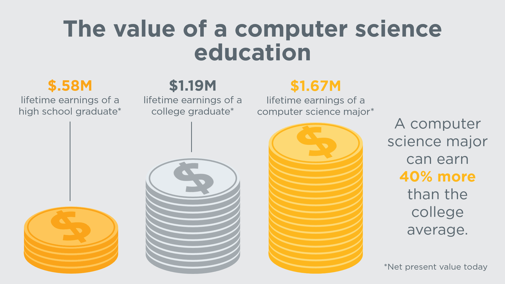

Why do you want to be a CS major? I'll tell you why!
How to know if you're fit to be a CS student:
- If you have good analytical skills...know how to identify a problem and find a solution.
- If you have a creative thinking brain...thinking outside the box.
- If you have good problem solving skills...know how to solve a problem in a logical way.
- If you have good critical thinking skills...can you wrap your mind around hard problems? Can you think on your own?
- If you are resilient...know how to get back in the game after countless failures.
- Lastly, if you are just a COOL person...be a CS major!
